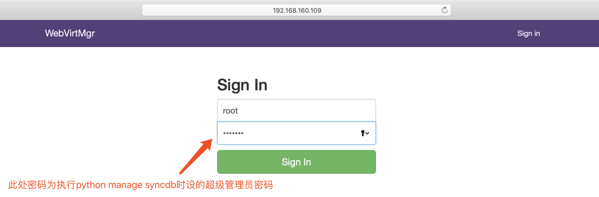
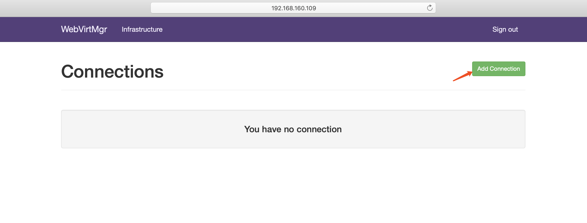
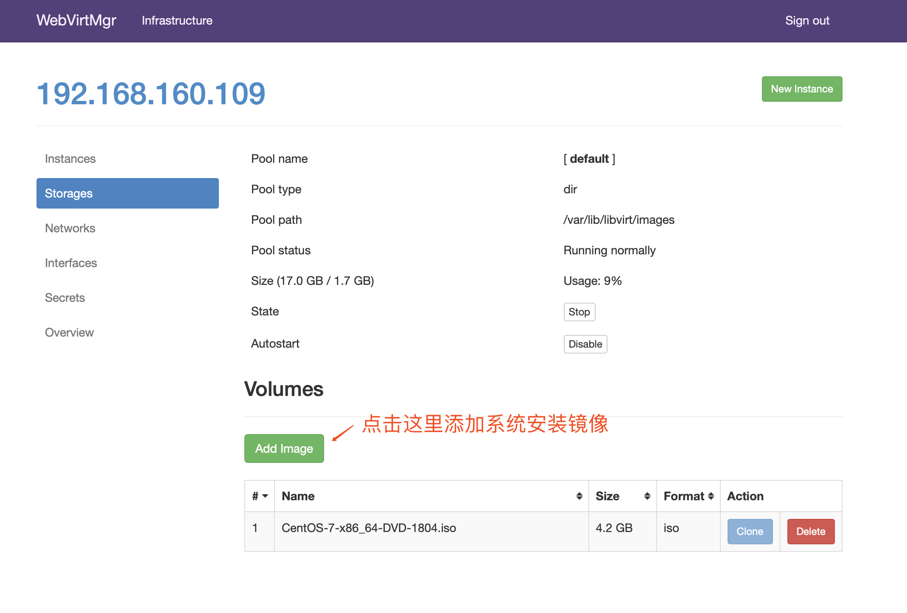
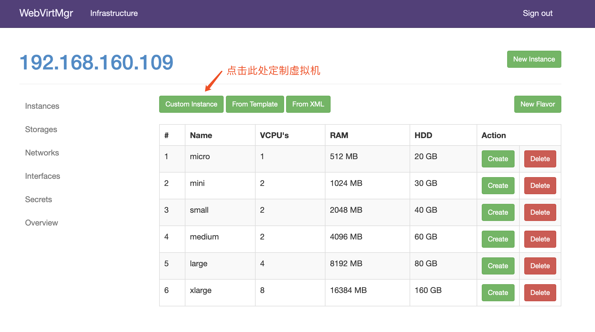
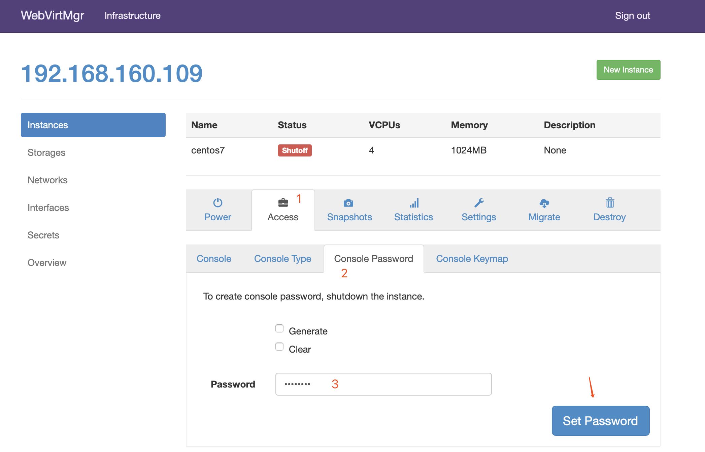

kvm虚拟化
1. 虚拟化介绍
虚拟化是云计算的基础。简单的说，虚拟化使得在一台物理的服务器上可以跑多台虚拟机，虚拟机共享物理机的 CPU、内存、IO 硬件资源，但逻辑上虚拟机之间是相互隔离的。
物理机我们一般称为宿主机（Host），宿主机上面的虚拟机称为客户机（Guest）。
那么 Host 是如何将自己的硬件资源虚拟化，并提供给 Guest 使用的呢？
这个主要是通过一个叫做 Hypervisor 的程序实现的。
根据 Hypervisor 的实现方式和所处的位置，虚拟化又分为两种：
- 全虚拟化
- 半虚拟化
全虚拟化：
Hypervisor 直接安装在物理机上，多个虚拟机在 Hypervisor 上运行。Hypervisor 实现方式一般是一个特殊定制的 Linux 系统。Xen 和 VMWare 的 ESXi 都属于这个类型

半虚拟化：
物理机上首先安装常规的操作系统，比如 Redhat、Ubuntu 和 Windows。Hypervisor 作为 OS 上的一个程序模块运行，并对管理虚拟机进行管理。KVM、VirtualBox 和 VMWare Workstation 都属于这个类型

理论上讲：
全虚拟化一般对硬件虚拟化功能进行了特别优化，性能上比半虚拟化要高；
半虚拟化因为基于普通的操作系统，会比较灵活，比如支持虚拟机嵌套。嵌套意味着可以在KVM虚拟机中再运行KVM。
2. kvm介绍
kVM 全称是 Kernel-Based Virtual Machine。也就是说 KVM 是基于 Linux 内核实现的。
KVM有一个内核模块叫 kvm.ko，只用于管理虚拟 CPU 和内存。
那 IO 的虚拟化，比如存储和网络设备则是由 Linux 内核与Qemu来实现。
作为一个 Hypervisor，KVM 本身只关注虚拟机调度和内存管理这两个方面。IO 外设的任务交给 Linux 内核和 Qemu。
大家在网上看 KVM 相关文章的时候肯定经常会看到 Libvirt 这个东西。
Libvirt 就是 KVM 的管理工具。
其实，Libvirt 除了能管理 KVM 这种 Hypervisor，还能管理 Xen，VirtualBox 等。
Libvirt 包含 3 个东西：后台 daemon 程序 libvirtd、API 库和命令行工具 virsh
- libvirtd是服务程序，接收和处理 API 请求；
- API 库使得其他人可以开发基于 Libvirt 的高级工具，比如 virt-manager，这是个图形化的 KVM 管理工具；
- virsh 是我们经常要用的 KVM 命令行工具
3. kvm部署
环境说明：
| 系统类型 | IP |
|---|---|
| RHEL7 | 172.16.12.128 |
3.1 kvm安装
部署前请确保你的CPU虚拟化功能已开启。分为两种情况：
- 虚拟机要关机设置CPU虚拟化
- 物理机要在BIOS里开启CPU虚拟化
//关闭防火墙与SELINUX
[root@kvm ~]# systemctl stop firewalld
[root@kvm ~]# systemctl disable firewalld
Removed symlink /etc/systemd/system/multi-user.target.wants/firewalld.service.
Removed symlink /etc/systemd/system/dbus-org.fedoraproject.FirewallD1.service.
[root@kvm ~]# setenforce 0
[root@kvm ~]# sed -ri 's/^(SELINUX=).*/\1disabled/g' /etc/selinux/config
[root@localhost ~]# reboot
//配置网络源
[root@kvm yum.repos.d]# curl -o /etc/yum.repos.d/CentOS7-Base-163.repo http://mirrors.163.com/.help/CentOS7-Base-163.repo
[root@kvm ~]# sed -i 's/\$releasever/7/g' /etc/yum.repos.d/CentOS7-Base-163.repo
[root@kvm ~]# sed -i 's/^enabled=.*/enabled=1/g' /etc/yum.repos.d/CentOS7-Base-163.repo
[root@kvm ~]# yum -y install epel-release vim wget net-tools unzip zip gcc gcc-c++
安装过程略.....
//验证CPU是否支持KVM；如果结果中有vmx（Intel）或svm(AMD)字样，就说明CPU的支持的
[root@kvm ~]# egrep -o 'vmx|svm' /proc/cpuinfo
vmx
vmx
vmx
vmx
//kvm安装
[root@kvm ~]# yum -y install qemu-kvm qemu-kvm-tools qemu-img virt-manager libvirt libvirt-python libvirt-client virt-install virt-viewer bridge-utils libguestfs-tools
安装过程略......
//因为虚拟机中网络，我们一般都是和公司的其他服务器是同一个网段，所以我们需要把 \
KVM服务器的网卡配置成桥接模式。这样的话KVM的虚拟机就可以通过该桥接网卡和公司内部 \
其他服务器处于同一网段
//此处我的网卡是ens33，所以用br0来桥接ens33网卡
[root@kvm ~]# cd /etc/sysconfig/network-scripts/
[root@kvm network-scripts]# ls
ifcfg-ens33 ifdown-isdn ifup ifup-plip ifup-tunnel
ifcfg-lo ifdown-post ifup-aliases ifup-plusb
.....此处内容省略
[root@kvm network-scripts]# cp ifcfg-ens33 ifcfg-br0
[root@kvm network-scripts]# cat ifcfg-br0
TYPE=Bridge
DEVICE=br0
NM_CONTROLLED=no
BOOTPROTO=static
NAME=br0
ONBOOT=yes
IPADDR=192.168.160.109
NETMASK=255.255.255.0
GATEWAY=192.168.160.1
DNS1=114.114.114.114
DNS2=8.8.8.8
[root@kvm network-scripts]# cat ifcfg-ens33
TYPE=Ethernet
BOOTPROTO=static
NAME=ens33
DEVICE=ens33
ONBOOT=yes
BRIDGE=br0
NM_CONTROLLED=no
//重启网络
[root@kvm ~]# systemctl restart network
[root@kvm ~]# ip a
1: lo: <LOOPBACK,UP,LOWER_UP> mtu 65536 qdisc noqueue state UNKNOWN qlen 1
link/loopback 00:00:00:00:00:00 brd 00:00:00:00:00:00
inet 127.0.0.1/8 scope host lo
valid_lft forever preferred_lft forever
inet6 ::1/128 scope host
valid_lft forever preferred_lft forever
2: ens33: <BROADCAST,MULTICAST,UP,LOWER_UP> mtu 1500 qdisc pfifo_fast master br0 state UP qlen 1000
link/ether 00:0c:29:4c:50:b4 brd ff:ff:ff:ff:ff:ff
3: virbr0: <NO-CARRIER,BROADCAST,MULTICAST,UP> mtu 1500 qdisc noqueue state DOWN qlen 1000
link/ether 52:54:00:60:a8:ea brd ff:ff:ff:ff:ff:ff
inet 192.168.122.1/24 brd 192.168.122.255 scope global virbr0
valid_lft forever preferred_lft forever
4: virbr0-nic: <BROADCAST,MULTICAST> mtu 1500 qdisc pfifo_fast master virbr0 state DOWN qlen 1000
link/ether 52:54:00:60:a8:ea brd ff:ff:ff:ff:ff:ff
5: br0: <BROADCAST,MULTICAST,UP,LOWER_UP> mtu 1500 qdisc noqueue state UP qlen 1000
link/ether 72:63:57:0a:ca:76 brd ff:ff:ff:ff:ff:ff
inet 192.168.160.109/24 brd 192.168.160.255 scope global br0
valid_lft forever preferred_lft forever
inet6 fe80::7063:57ff:fe0a:ca76/64 scope link
valid_lft forever preferred_lft forever
//启动服务
[root@kvm ~]# systemctl start libvirtd
[root@kvm ~]# systemctl enable libvirtd
//验证安装结果
[root@kvm ~]# lsmod|grep kvm
kvm_intel 170086 0
kvm 566340 1 kvm_intel
irqbypass 13503 1 kvm
//测试并验证安装结果
[root@kvm ~]# virsh -c qemu:///system list
Id Name State
----------------------------------------------------
[root@kvm ~]# virsh --version
3.9.0
[root@kvm ~]# virt-install --version
1.4.3
[root@kvm ~]# ln -s /usr/libexec/qemu-kvm /usr/bin/qemu-kvm
[root@kvm ~]# ll /usr/bin/qemu-kvm
lrwxrwxrwx 1 root root 21 Oct 18 10:57 /usr/bin/qemu-kvm -> /usr/libexec/qemu-kvm
[root@kvm ~]# lsmod |grep kvm
kvm_intel 170086 0
kvm 566340 1 kvm_intel
irqbypass 13503 1 kvm
//查看网桥信息
[root@kvm ~]# brctl show
bridge name bridge id STP enabled interfaces
br0 8000.000c294c50b4 no ens33
virbr0 8000.52540060a8ea yes virbr0-nic
3.2 kvm web管理界面安装
kvm 的 web 管理界面是由 webvirtmgr 程序提供的。
//安装依赖包
[root@kvm ~]# yum -y install git python-pip libvirt-python libxml2-python python-websockify supervisor nginx python-devel
//升级pip
[root@kvm ~]# pip install --upgrade pip
//从github上下载webvirtmgr代码
[root@kvm ~]# cd /usr/local/src/
[root@kvm src]# git clone git://github.com/retspen/webvirtmgr.git
Cloning into 'webvirtmgr'...
remote: Enumerating objects: 5730, done.
remote: Total 5730 (delta 0), reused 0 (delta 0), pack-reused 5730
Receiving objects: 100% (5730/5730), 3.01 MiB | 39.00 KiB/s, done.
Resolving deltas: 100% (3688/3688), done.
//安装webvirtmgr
[root@kvm src]# cd webvirtmgr/
[root@kvm webvirtmgr]# pip install -r requirements.txt
Collecting django==1.5.5 (from -r requirements.txt (line 1))
Downloading https://files.pythonhosted.org/packages/38/49/93511c5d3367b6b21fc2995a0e53399721afc15e4cd6eb57be879ae13ad4/Django-1.5.5.tar.gz (8.1MB)
57% |██████████████████▌ | 4.7MB 38kB/s eta 0:01:28
.....此处省略安装步骤
//检查sqlite3是否安装
[root@kvm webvirtmgr]# python
Python 2.7.5 (default, May 3 2017, 07:55:04)
[GCC 4.8.5 20150623 (Red Hat 4.8.5-14)] on linux2
Type "help", "copyright", "credits" or "license" for more information.
>>> import sqlite3
>>> exit()
//初始化帐号信息
[root@kvm webvirtmgr]# python manage.py syncdb
WARNING:root:No local_settings file found.
Creating tables ...
Creating table auth_permission
Creating table auth_group_permissions
Creating table auth_group
Creating table auth_user_groups
Creating table auth_user_user_permissions
Creating table auth_user
Creating table django_content_type
Creating table django_session
Creating table django_site
Creating table servers_compute
Creating table instance_instance
Creating table create_flavor
You just installed Django's auth system, which means you don't have any superusers defined.
Would you like to create one now? (yes/no): yes //问你是否创建超级管理员帐号
Username (leave blank to use 'root'): //指定超级管理员帐号用户名，默认留空为root
Email address: sean1002@126.com //设置超级管理员邮箱
Password: //设置超级管理员密码
Password (again): //再次输入超级管理员密码
Superuser created successfully.
Installing custom SQL ...
Installing indexes ...
Installed 6 object(s) from 1 fixture(s)
//拷贝web网页至指定目录
[root@kvm webvirtmgr]# mkdir /var/www
[root@kvm webvirtmgr]# cp -r /usr/local/src/webvirtmgr /var/www/
[root@kvm webvirtmgr]# chown -R nginx.nginx /var/www/webvirtmgr/
//生成密钥
[root@kvm ~]# ssh-keygen -t rsa
Generating public/private rsa key pair.
Enter file in which to save the key (/root/.ssh/id_rsa):
Created directory '/root/.ssh'.
Enter passphrase (empty for no passphrase):
Enter same passphrase again:
Your identification has been saved in /root/.ssh/id_rsa.
Your public key has been saved in /root/.ssh/id_rsa.pub.
The key fingerprint is:
SHA256:CQoZtso2M5Uo39lKvjZboncqakQ69iJt5wnjiJKZNhw root@kvm
The key's randomart image is:
+---[RSA 2048]----+
| o |
| ..+. |
|..+o . |
|o+.o + . . |
|+*. = . S |
|+E+o . |
|+*= + . |
|BO+===. |
|Oo=**= |
+----[SHA256]-----+
//由于这里webvirtmgr和kvm服务部署在同一台机器，所以这里本地信任。如果kvm部署在其他机器，那么这个是它的ip
[root@kvm ~]# ssh-copy-id 192.168.160.109
/usr/bin/ssh-copy-id: INFO: Source of key(s) to be installed: "/root/.ssh/id_rsa.pub"
The authenticity of host '192.168.160.109 (192.168.160.109)' can't be established.
ECDSA key fingerprint is SHA256:UszC1ZeHM7xw/uefVkJoXW6XgRw+Jl51tAXLjFERclE.
ECDSA key fingerprint is MD5:b3:f1:02:b8:01:8e:53:a7:87:09:c0:75:24:4c:ad:88.
Are you sure you want to continue connecting (yes/no)? yes
/usr/bin/ssh-copy-id: INFO: attempting to log in with the new key(s), to filter out any that are already installed
/usr/bin/ssh-copy-id: INFO: 1 key(s) remain to be installed -- if you are prompted now it is to install the new keys
root@192.168.160.109's password:
Number of key(s) added: 1
Now try logging into the machine, with: "ssh '192.168.160.109'"
and check to make sure that only the key(s) you wanted were added.
//配置端口转发
[root@kvm ~]# ssh 192.168.160.109 -L localhost:8000:localhost:8000 -L localhost:6080:localhost:60
Last login: Thu Oct 18 08:26:40 2018 from 192.168.160.36
[root@kvm ~]# ss -antl
State Recv-Q Send-Q Local Address:Port Peer Address:Port
LISTEN 0 128 *:111 *:*
LISTEN 0 5 192.168.122.1:53 *:*
LISTEN 0 128 *:22 *:*
LISTEN 0 100 127.0.0.1:25 *:*
LISTEN 0 128 127.0.0.1:6080 *:*
LISTEN 0 128 127.0.0.1:8000 *:*
LISTEN 0 128 :::111 :::*
LISTEN 0 128 :::22 :::*
LISTEN 0 100 ::1:25 :::*
LISTEN 0 128 ::1:6080 :::*
LISTEN 0 128 ::1:8000 :::*
//配置nginx
[root@kvm ~]# vim /etc/nginx/nginx.conf
user nginx;
worker_processes auto;
error_log /var/log/nginx/error.log;
pid /run/nginx.pid;
include /usr/share/nginx/modules/*.conf;
events {
worker_connections 1024;
}
http {
log_format main '$remote_addr - $remote_user [$time_local] "$request" '
'$status $body_bytes_sent "$http_referer" '
'"$http_user_agent" "$http_x_forwarded_for"';
access_log /var/log/nginx/access.log main;
sendfile on;
tcp_nopush on;
tcp_nodelay on;
keepalive_timeout 65;
types_hash_max_size 2048;
include /etc/nginx/mime.types;
default_type application/octet-stream;
include /etc/nginx/conf.d/*.conf;
server {
listen 80;
server_name localhost;
include /etc/nginx/default.d/*.conf;
location / {
root html;
index index.html index.htm;
}
error_page 404 /404.html;
location = /40x.html {
}
error_page 500 502 503 504 /50x.html;
location = /50x.html {
}
}
}
[root@kvm ~]# vim /etc/nginx/conf.d/webvirtmgr.conf
server {
listen 80 default_server;
server_name $hostname;
#access_log /var/log/nginx/webvirtmgr_access_log;
location /static/ {
root /var/www/webvirtmgr/webvirtmgr;
expires max;
}
location / {
proxy_pass http://127.0.0.1:8000;
proxy_set_header X-Real-IP $remote_addr;
proxy_set_header X-Forwarded-for $proxy_add_x_forwarded_for;
proxy_set_header Host $host:$server_port;
proxy_set_header X-Forwarded-Proto $remote_addr;
proxy_connect_timeout 600;
proxy_read_timeout 600;
proxy_send_timeout 600;
client_max_body_size 1024M;
}
}
//确保bind绑定的是本机的8000端口
[root@kvm ~]# vim /var/www/webvirtmgr/conf/gunicorn.conf.py
.....此处省略N行
bind = '0.0.0.0:8000' //确保此处绑定的是本机的8000端口，这个在nginx配置中定义了，被代理的端口
backlog = 2048
.....此处省略N行
//重启nginx
[root@kvm ~]# systemctl restart nginx
[root@kvm ~]# ss -antl
State Recv-Q Send-Q Local Address:Port Peer Address:Port
LISTEN 0 128 *:111 *:*
LISTEN 0 128 *:80 *:*
LISTEN 0 5 192.168.122.1:53 *:*
LISTEN 0 128 *:22 *:*
LISTEN 0 100 127.0.0.1:25 *:*
LISTEN 0 128 127.0.0.1:6080 *:*
LISTEN 0 128 127.0.0.1:8000 *:*
LISTEN 0 128 :::111 :::*
LISTEN 0 128 :::22 :::*
LISTEN 0 100 ::1:25 :::*
LISTEN 0 128 ::1:6080 :::*
LISTEN 0 128 ::1:8000 :::*
//设置supervisor
[root@kvm ~]# vim /etc/supervisord.conf
.....此处省略上面的内容，在文件最后加上以下内容
[program:webvirtmgr]
command=/usr/bin/python2 /var/www/webvirtmgr/manage.py run_gunicorn -c /var/www/webvirtmgr/conf/gunicorn.conf.py
directory=/var/www/webvirtmgr
autostart=true
autorestart=true
logfile=/var/log/supervisor/webvirtmgr.log
log_stderr=true
user=nginx
[program:webvirtmgr-console]
command=/usr/bin/python2 /var/www/webvirtmgr/console/webvirtmgr-console
directory=/var/www/webvirtmgr
autostart=true
autorestart=true
stdout_logfile=/var/log/supervisor/webvirtmgr-console.log
redirect_stderr=true
user=nginx
//启动supervisor并设置开机自启
[root@kvm ~]# systemctl start supervisord
[root@kvm ~]# systemctl enable supervisord
Created symlink from /etc/systemd/system/multi-user.target.wants/supervisord.service to /usr/lib/systemd/system/supervisord.service.
[root@kvm ~]# systemctl status supervisord
● supervisord.service - Process Monitoring and Control Daemon
Loaded: loaded (/usr/lib/systemd/system/supervisord.service; enabled; vendor preset: disabled)
Active: active (running) since Thu 2018-10-18 11:59:33 CST; 25s ago
Main PID: 17918 (supervisord)
CGroup: /system.slice/supervisord.service
└─17918 /usr/bin/python /usr/bin/supervisord -c /etc/supervisord.conf
Oct 18 11:59:33 kvm systemd[1]: Starting Process Monitoring and Control Daemon...
Oct 18 11:59:33 kvm systemd[1]: Started Process Monitoring and Control Daemon.
[root@kvm webvirtmgr]# ss -antl
State Recv-Q Send-Q Local Address:Port Peer Address:Port
LISTEN 0 128 *:111 *:*
LISTEN 0 128 *:80 *:*
LISTEN 0 5 192.168.122.1:53 *:*
LISTEN 0 128 *:22 *:*
LISTEN 0 100 127.0.0.1:25 *:*
LISTEN 0 128 *:8000 *:*
LISTEN 0 100 *:6080 *:*
LISTEN 0 128 :::111 :::*
LISTEN 0 128 :::22 :::*
LISTEN 0 100 ::1:25 :::*
//配置nginx用户
[root@kvm home]# su - nginx -s /bin/bash
-bash-4.2$ ssh-keygen -t rsa
Generating public/private rsa key pair.
Enter file in which to save the key (/var/lib/nginx/.ssh/id_rsa):
Created directory '/var/lib/nginx/.ssh'.
Enter passphrase (empty for no passphrase):
Enter same passphrase again:
Your identification has been saved in /var/lib/nginx/.ssh/id_rsa.
Your public key has been saved in /var/lib/nginx/.ssh/id_rsa.pub.
The key fingerprint is:
SHA256:rdbmW/YIXxAJBzPsd9q9eKHPjWtSZ5EQC5li3tkczYI nginx@localhost.localdomain
The key's randomart image is:
+---[RSA 2048]----+
| .=o=.+ |
| o.E.=.o |
| o.o *.+ .|
| o.o.+.o |
| S ...+ ..|
| o ..o.+|
| o + o.+oo|
| . o =.*o+.|
| o.oo*+.|
+----[SHA256]-----+
-bash-4.2$ touch ~/.ssh/config && echo -e "StrictHostKeyChecking=no\nUserKnownHostsFile=/dev/null" >> ~/.ssh/config
-bash-4.2$ chmod 0600 ~/.ssh/config
-bash-4.2$ ssh-copy-id root@192.168.160.109
/bin/ssh-copy-id: INFO: Source of key(s) to be installed: "/var/lib/nginx/.ssh/id_rsa.pub"
/bin/ssh-copy-id: INFO: attempting to log in with the new key(s), to filter out any that are already installed
/bin/ssh-copy-id: INFO: 1 key(s) remain to be installed -- if you are prompted now it is to install the new keys
Warning: Permanently added '192.168.160.109' (ECDSA) to the list of known hosts.
root@192.168.160.109's password:
Number of key(s) added: 1
Now try logging into the machine, with: "ssh 'root@192.168.160.109'"
and check to make sure that only the key(s) you wanted were added.
-bash-4.2$ exit
logout
[root@kvm ~]# vim /etc/polkit-1/localauthority/50-local.d/50-libvirt-remote-access.pkla
[Remote libvirt SSH access]
Identity=unix-user:root
Action=org.libvirt.unix.manage
ResultAny=yes
ResultInactive=yes
ResultActive=yes
[root@kvm ~]# chown -R root.root /etc/polkit-1/localauthority/50-local.d/50-libvirt-remote-access.pkla
[root@kvm ~]# systemctl restart nginx
[root@kvm ~]# systemctl restart libvirtd
3.3 kvm web界面管理
通过ip地址在浏览器上访问kvm，例如我这里就是：http://192.168.160.109/login

3.3.1 kvm连接管理
创建SSH连接：


3.3.2 kvm存储管理
创建存储：

进入存储：


通过远程连接软件上传ISO镜像文件至存储目录/var/lib/libvirt/images/
[root@kvm ~]# cd /var/lib/libvirt/images/
[root@kvm images]# ls
[root@kvm images]#
Upload SCP
CentOS-7-x86_64-DVD-1804.iso (4263.00 MB, 8:45 min = 8.12 MB/sec)
[root@kvm images]# ls
CentOS-7-x86_64-DVD-1804.iso
在 web 界面查看ISO镜像是否存在

创建系统安装镜像


添加成功如下图所示

3.3.3 kvm网络管理
添加桥接网络


3.3.4 实例管理
实例(虚拟机)创建


虚拟机插入光盘

设置在 web 上访问虚拟机的密码

启动虚拟机

虚拟机安装

虚拟机安装步骤就是安装系统的步骤，此处就不再赘述
4.故障案例
4.1 案例1
web界面配置完成后可能会出现以下错误界面
解决方法是安装novnc并通过novnc_server启动一个vnc
[root@localhost ~]# ll /etc/rc.local
lrwxrwxrwx. 1 root root 13 Aug 6 2018 /etc/rc.local -> rc.d/rc.local
[root@localhost ~]# ll /etc/rc.d/rc.local
-rw-r--r-- 1 root root 513 Mar 11 22:35 /etc/rc.d/rc.local
[root@localhost ~]# chmod +x /etc/rc.d/rc.local
[root@localhost ~]# ll /etc/rc.d/rc.local
-rwxr-xr-x 1 root root 513 Mar 11 22:35 /etc/rc.d/rc.local
[root@localhost ~]# vim /etc/rc.d/rc.local
......此处省略N行
# that this script will be executed during boot.
touch /var/lock/subsys/local
nohup novnc_server 172.16.12.128:5920 &
[root@localhost ~]# . /etc/rc.d/rc.local
做完以上操作后再次访问即可正常访问
4.2 案例2
第一次通过web访问kvm时可能会一直访问不了，一直转圈，而命令行界面一直报错(too many open files)
此时需要对nginx进行配置
[root@localhost ~]# vim /etc/nginx/nginx.conf
....此处省略N行
user nginx;
worker_processes auto;
error_log /var/log/nginx/error.log;
pid /run/nginx.pid;
worker_rlimit_nofile 655350; //添加此行配置
# Load dynamic modules. See /usr/share/nginx/README.dynamic.
....此处省略N行
[root@localhost ~]# systemctl restart nginx
然后对系统参数进行设置
[root@localhost ~]# vim /etc/security/limits.conf
....此处省略N行
# End of file
* soft nofile 655350
* hard nofile 655350
到此问题即可解决
作业
写博客，将kvm的详细部署经过写成博客，部署过程中如遇到问题也要写进博客，并说明如何解决的